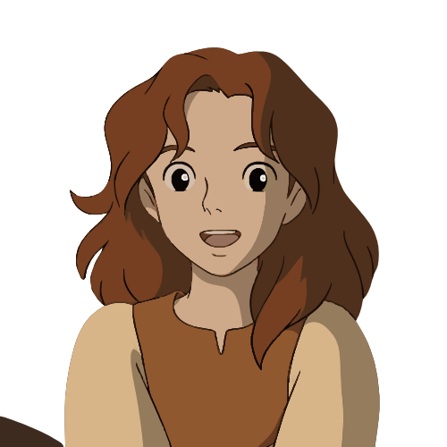

my name is
yola efendi
Halo nama saya Yola Yulia Efendi.Saya merupakan siswi Smk N 1 Bawang Banjarnegara Jawa Tengah.Saya suka coding,dan bahasa yang saya sukai adalah bahasa python.Anda bisa melihat portofolio saya.

Halo nama saya Yola Yulia Efendi.Saya merupakan siswi Smk N 1 Bawang Banjarnegara Jawa Tengah.Saya suka coding,dan bahasa yang saya sukai adalah bahasa python.Anda bisa melihat portofolio saya.
saya suuka bahasa c++ karena bahasanya mudah di pelajari
berpikir kritis dalam mengambil suatu keputusan ataupun tindakan
saya suka matematika


kelas 10 semester dua saya melakukan pembuatan web dengan mengobservasi project p5 dan implementasikan daam sebuah web. saya telah mengembangkan sebuah website interaktif untuk restoran ayam geprek.css untuk menciptakan elemen visual yang dinamis dan menarik, memberikan pengalaman pengguna yang imersif dan menyenangkan. Website ini dirancang untuk memperkenalkan menu, menyediakan informasi kontak, dan mempermudah proses pemesanan.Proyek ini bertujuan untuk mengintegrasikan elemen visual yang menarik dengan desain fungsional.

Dalam proyek ini, saya berkesempatan untuk bekerja pada beberapa aplikasi Java yang diajarkan oleh kakak-kakak universitas yang datang ke sekolah kami. Proyek ini memberikan pengalaman langsung dalam pengembangan perangkat lunak dengan bahasa pemrograman Java, serta memperkenalkan berbagai konsep dan teknik pemrograman yang mendalam. Proyek ini bertujuan untuk memberikan pemahaman mendalam tentang pemrograman Java dan penerapan konsep-konsep pemrograman dalam pengembangan aplikasi nyata. Melalui proyek ini, saya belajar bagaimana menerjemahkan kebutuhan fungsional menjadi solusi teknis, serta berlatih dalam kolaborasi tim dan penyelesaian masalah secara efektif.
sd 3 tahun melanjutkan dari jateng ke jatim
sekolah menengah pertama 3 tahun
Software Engineering
pindah sekolah dari smkn 1 boyolangu jawatimur
Halo, saya yola. Sejak saya memasuki SMK, saya menemukan kecintaan yang mendalam terhadap dunia pemrograman. Dengan semangat untuk belajar dan berkembang, saya telah menghabiskan waktu untuk mengeksplorasi berbagai bahasa pemrograman dan teknologi. Selama masa SMK, saya aktif mengikuti berbagai proyek coding, mulai dari aplikasi sederhana hingga website interaktif. Proyek-proyek ini tidak hanya mengasah keterampilan teknis saya, tetapi juga mengajarkan pentingnya kerja sama dan kreativitas dalam menyelesaikan masalah
Banjarnegara Jawa Tengah
+62 858-0695-1970
yolaefendi99@gmail.com